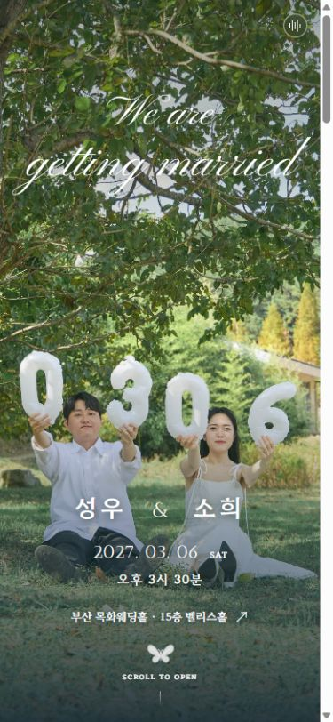
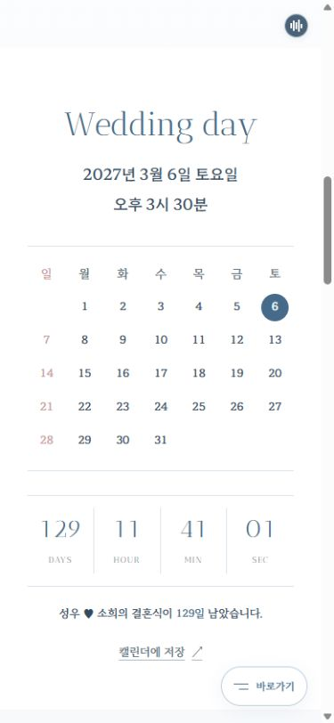
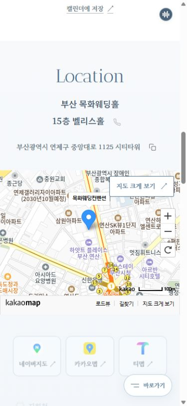
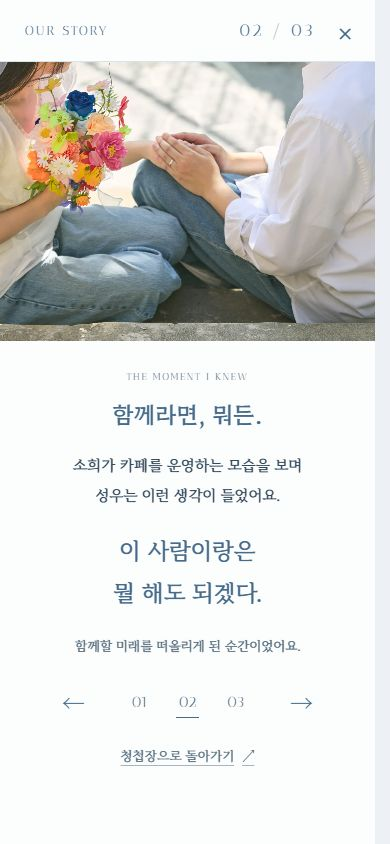
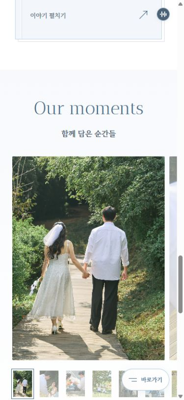
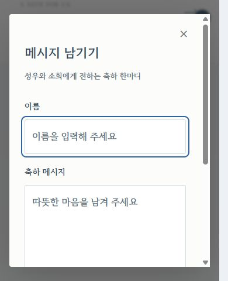
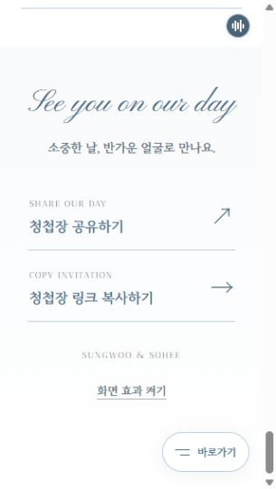
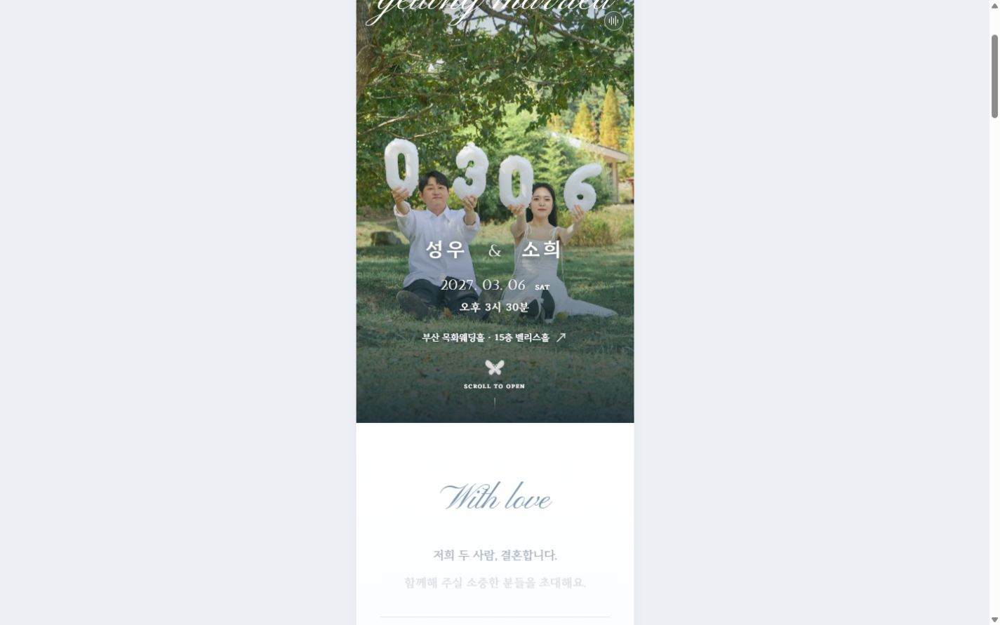

2026-10-28 · VER6.0 현행 화면 점검 → VER6.1 개선구성은 충분합니다.
새 항목보다 안내의 완성과 자연스러운 이동이 우선입니다.
초대 → 날짜 → 위치 → 이야기 → 사진첩 → 마음 전하실 곳 → 축하 메시지 → 공유. 일반 청첩장의 핵심 구성과 맞으며, 긴 이야기는 별도 창에 모아 본문 중복을 줄였습니다.
공개 계좌가 없으면 해당 영역·빠른 메뉴가 숨겨집니다. 기능이 삭제된 상태가 아닙니다. 공개 화면에서는 사진 7장과 기존 방명록을 확인했고, 로컬 화면의 예시 계좌는 운영에 저장하지 않았습니다.
일반 서비스와의 비교
| 항목 | 우리 청첩장 | 판단 |
|---|
| 이름·가족·초대글 | 표지와 간결한 초대 구역 | 부모님 ‘아빠·엄마’를 실제 성함으로 교체 필요 |
| 예식 일시·달력·남은 시간 | 한 구역 + 일정 파일 | 충분. 별도 날짜 장면을 더 넣을 필요 없음 |
| 지도·길찾기 | 약도, 네이버·카카오·티맵, 주소 복사·예식장 전화 | 충분. 주차 무료 시간·식사 층/시간은 확정 후 보완 |
| 사진·배경음악·이야기 | 관리형 단일 사진첩, 전체 MP3, 세 장의 이야기 | 충분. 하객 사진 업로드는 사용자가 고른 방향과 달라 추가하지 않음 |
| 마음 전하실 곳 | 양가 구분·부모님 포함·숫자 복사·등록된 경우 송금 링크 | 기능 준비됨. 실제 공개 계좌 입력이 필요 |
| 축하 메시지·공유 | 공개 방명록, 본인 글 삭제, 전체 보기, 공유·링크 복사 | 운영자 방명록 숨김/삭제 관리 화면은 추후 보완 후보 |
| RSVP·연락처·QR·당일 전용 모드 | RSVP는 요청대로 제외, 개인 연락처 미입력, 빠른 메뉴 제공 | 선택 기능. 없어도 핵심 안내 누락은 아님 |
비교 근거: 데어무드 공식 기능 안내의 사진첩·계좌·방명록·당일 편의 기능, 투아워게스트 공식 업데이트의 이야기·부모님 계좌·FAQ·섹션 구성, 바른손 공식 안내의 선택 기능 켜기/끄기. 모든 선택 기능을 필수로 보지는 않았습니다.
이번에 바꾼 동작
- 초대글·달력·지도·이야기·사진첩이 화면 아래에서 스크롤 진행에 맞춰 이동·확대되며 선명해집니다. 최대 이동 46px, 배율 .965→1. 이미 읽은 내용은 다시 숨기지 않습니다.
- 표지 사진은 스크롤에 따라 작게 움직이고 확대됩니다. 손글씨 오프닝·이름·날짜와 단일 음악 요소는 유지합니다.
- 지도 위에서 휠 입력이 지도 확대에 잡히던 문제를 수정했습니다. 본문 위치가 2009→2600으로 이동하는 것을 확인했습니다.
- PC 빠른 메뉴의 배경 축소가 이동 목표 위치에 영향을 주던 부분을 정리했습니다. 도착 위치를 상단 약 20px로 확인했습니다.
- 320px 최하단에서 고정 메뉴가 화면 효과 버튼을 덮지 않도록 여백을 보완했습니다.
화면별 점검

1. 표지 · 정상390×844, 기존 손글씨·이름·일시를 유지합니다.

2. 예식 안내 · 정상달력·남은 시간·일정 저장을 한 구역에 제공합니다.

3. 오시는 길 · 수정 완료지도 위 스크롤이 지도 확대 대신 본문 이동으로 이어집니다. 크게 보기와 지도 앱 링크를 유지합니다.

4. 이야기 · 정상세 장을 넘기는 별도 창. 닫기 전후 본문 위치가 같습니다.

5. 사진첩 · 정상단일 사진첩, 확대·앞뒤 이동·썸네일. 사진 위에서도 세로 스크롤이 됩니다.

6. 방명록 · 정상390×480처럼 가용 높이가 줄어도 창 내부 스크롤과 닫기가 가능합니다. 실제 기기 키보드는 별도 확인입니다.

7. 공유·빠른 메뉴 · 수정 완료320px에서 화면 효과 토글과 고정 빠른 메뉴가 겹치지 않도록 여백을 조정했습니다.

8. PC 스크롤 등장 · 적용스크롤 위치에 따라 투명도·이동·배율이 변합니다. 캡처는 등장 중간 장면입니다.
검증 범위와 한계
브라우저 화면 320×568, 390×844, 430×932, 1440×900에서 가로 넘침 없이 확인했습니다. 지도·사진첩 위 세로 스크롤, 빠른 메뉴, 이야기·사진 창 복귀 위치, 음악 연속 재생, 효과 끄기에서 숨은 본문 0개, 브라우저 오류 0을 확인했습니다. 모션 진행·초점 노출·직접 링크·효과 해제·숨은 탭·대화상자 보호를 포함한 전체 1,997개 검사가 통과했습니다.
실제 iPhone/Safari·삼성 인터넷의 터치, OS 키보드·지도 앱 실행·캘린더 가져오기·카카오톡 미리보기까지 검증했다는 뜻은 아닙니다. 이 항목들은 두 분 휴대폰에서 최종 확인이 필요합니다. 운영 방명록·사진·계좌에 테스트 데이터를 쓰지 않았습니다.
VER6 보기 · 보존된 VER5.6 보기 · 화면 크기별 기록